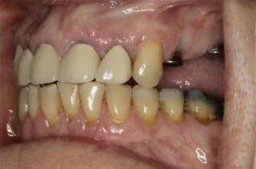
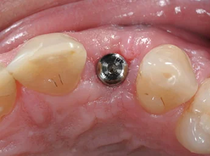
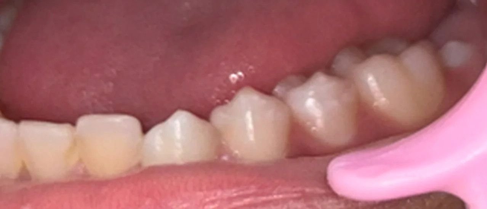
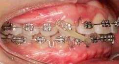
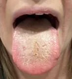
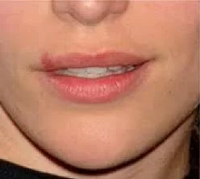

DOVE
Dental Optical Visual Encoder
A Self-Supervised Vision Foundation Model for Oral Photography Understanding
Learning from Unlabeled Oral Photographs
Oral photographs contain rich clinical information but exhibit substantial visual heterogeneity caused by variations in imaging devices, illumination, viewing angles, and clinical conditions. DOVE was developed through self-supervised pretraining on a large-scale corpus of unlabeled oral photographs using a teacher–student framework derived from DINOv3. The model learns domain-specific visual representations and demonstrates strong transferability across multiple oral imaging tasks, including classification, semantic segmentation, and image retrieval.
Large-Scale Oral Photography Corpus
DOVE is pretrained on various unlabeled clinical photos with different semantics.






How DOVE Is Built
A self-supervised teacher–student pipeline distills domain-specific visual knowledge from raw oral photographs.
Input Images
Large-scale unlabeled oral photographs
Model Initialization
Vision Transformer backbone initialized from general-domain DINOv3 weights.
Teacher–Student Training
Self-supervised learning with multi-crop augmentation, no labels required.
DOVE Encoder
A frozen, transferable oral-domain visual representation.
Downstream Tasks
Classification · Segmentation · Retrieval · Feature Visualization.